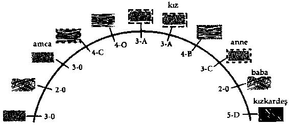

l
l
Giriş
A: Büyük dikdörtgen bir yapının duvarlarında dizili olan kitap
rafları.
B: Gereken Yaşam Kitaplarını bulmada ruhlara yardım eden ar
şivciler ve rehberler için yapılmış kaideler.
C: Uzun çalışma masaları.
O: Ruhun görüş alanının dışında uzayıp giden kitap duvarları
ve çalışma masaları.
1 98
ederler. Bu spiritüel kütüphaneler ruhlara, kendi düzeylerine
bağlı olarak farklı biçimlerde hizmet verir. Ruhlara ya kendi rehberleri, ya Arşivciler ya da her ikisi birden yardım eder.
Danışanlarımdan bazıları ruh dünyasına döndükten sonra
kütüphaneye tek başına giderken, bazılarının yanında rehberler
vardır ve bu yere giderken onlara eşlik ederler. Bir rehber öğrencisini çalışmaya başlattıktan sonra oradan ayrılabilir. Birçok öğe burada rol alır: Araştırmanın karmaşıklığı, öğrenci ruhun gözden geçireceği zaman gibi. Öğrenciler bu çalışma salonlarındayken, kimi zaman çiftler halinde çalışırlar, ama çoğunlukla gereken Yaşam Kitaplarının bulunmasında Arşivcilerden yardım aldıktan sonra araştırmalarını tek başına yaparlar.
Doğu felsefesi, geçmişimizdeki her hayattan, içinde bulundu
ğumuz her olayla birlikte, her düşünce, söz ve işin Akaşik Kayıt'ta kaydedildiğine inanır. Gelecekteki olayların olasılıkları bu kayıtlar yardımıyla görülebilir. "Akaşa" sözcüğü esasen işitsel/ görsel manyetik bir bant gibi var olan her enerji titreşimini kaydeden, bütün evrensel belleğin özü anlamına gelir. Tanrısal,
ölümsüz ve bilinçli belleğin bağlantılarını tartışmıştım. Kaçırılmış fırsatları ve geçmiş eylemlerle ilgili sorumluluklarımızı incelediğimiz zamansız yerler, spiritüel kütüphanelere dair insani kavramsallaştırmamız, bu bellek bağlantılarının bir örneğidir.
Doğulu insanlar geçmiş, şimdi ve gelecek her olayın özünün
enerji parçacıkları içinde tutulma yoluyla korunduğunu, sonra
da titreşimsel ayarlamalarla kutsal bir spiritüel ortamda yeniden
elde edildiğini tasavvur etmişlerdir. Her birimiz için kişisel spiritüel kayıtlar olduğu kavramının, gerçekte Hindistan'da ya da yeryüzündeki başka bir yerde meydana çıkmadığını düşünüyorum. Bu bizim hayatlar arasında bu kayıtlara dair bilgiye haliha-
·
zırda sahip olan spiritüel zihinlerimizle başlamıştır.
Spiritüel kütüphaneler hakkında yeniden elde edilmiş anıların belli yönlerinin insanları korkutmayı amaçlayan inanç sistemleri tarafından çökertilebilmesini rahatsız edici buluyorum.
199
RUHLARIN KADERİ
Doğu kültürleri içinde, Yaşam Kitaplarının ruha karşı bir kanıt
olarak kullanılabilecek spiritüel günlüklere benzediğine inanmaya yöneltilmiş kültürler vardır. Spiritüel kütüphanelerin vizyonları doğru yoldan ayrılmış ruhlara karşı kendi karmik kayıtlarına dayalı deliller olarak hazırlanan sahneler şeklinde yorumlanır. Bu
yanlış inanç sisteminde bir adım daha ileri gitmek bizi, yaşamında ruhun kusurları hakkındaki deliller yüzünden mahkum etmek için, korkulan bir yargıç kürsüsünün önüne getirecektir. Bazı psişikler Akaşik Kayıtlar aracılığıyla gelecekteki olaylara ulaşabildiklerini ve özel olarak bu kayıtlarla çalışarak felaketleri önleyecek şekilde sonuçları değiştirebileceklerini iddia ederler.
Korku aşılama konusuna gelindiğinde insanın aşırılığının ve
abartısının hiçbir sınırı yoktur. İntihar edenler için korkunç bir
ceza olduğu korkusu başlıca örneklerden biridir. Cennetin dışında tutulmanın intihar konusunda bir caydırıcı olduğu doğrudur, ama bu yanlış bir yaklaşımdır. Son yıllarda Katolik kilisesinin bile intiharın uç boyutlarda bir spiritüel cezalandırmaya tabi tutulacak ölümcül bir günah olması konusunda o kadar katı olmadı
ğını görüyorum. Günümüzde Vatikan onaylı bir ilmihal var; bu
ilmihalde intiharın "doğal yasaya karşı" olduğu ifade ediliyor,
ama şu da ekleniyor: "Sadece Tanrı'nın bildiği şekillerde hayırlı
bir tövbe etme fırsatı vardır." Buradaki hayırlı, iyi bir amaca vesile olan anlamına gelmektedir.
Bir sonraki vakam son yaşamında kendisini öldürmüş olan
bir deneği anlatıyor. Bu hareketin incelemesini bir kütüphane ortamında yapıyor. Ruh dünyasındaki tövbe genellikle burada başlar. Bu noktada kütüphane konusundan bir süreliğine ayrılarak, intihar ve sonrasında ruh dünyasındaki ceza hakkında sorulan sorulara değinmek için onun intiharını gözden geçireceğim.
Önceki hayatlarında intihar etmiş olan danışanlarla çalışırken, ölüm anından hemen sonra pek çoğunun söylediği ilk şey şu oluyor: "Oh, Tanrım, nasıl bu kadar aptal olabildim!" Bunlar
fiziksel olarak sağlıklı insanlar, güçten kuvvetten düşüren fizik-
200
RUH GRUP SİSTEMLERi
sel bir hastalık çeken insanlar değiller. Genç ya da yaşlı, fiziksel
durumu yaşamının kalitesini neredeyse sıfıra indirmiş olan bir
kişinin intiharı ruh dünyasında sağlıklı bedenlere sahip olanlardan farklı bir şekilde ele alınmaktadır. Bütün intihar vakaları merhametle ve anlayışla ele alınırken, sağlıklı bir bedeni varken
kendini öldürmüş olanlar için bir hesaplaşma söz konusudur.
Kendi deneyimlerime göre, ruhlar merhamet içeren bir ölüme
karıştıklarında bir başarısızlık ya da suçluluk duygusu yaşamıyor. Özgür iradesi olan iki kardeşle ilgili bu tür bir ölüme dair gerçekçi bir örneği 9. Bölümde vereceğim. Dayanılmaz bir fiziksel acı söz konusu olduğunda, kendimizi acıdan ve yaşam destek sistemlerine bağlı çaresiz çocuklar gibi muamele görmenin onurumuzu kırmasından kurtulma hakkına sahibiz. Ruh dünyasında, kendi elleriyle ya da şefkatli bir bakıcının elleriyle, korkunç derecede bozulmuş bir bedeni terk eden bir ruha hiçbir etiket yakıştırılmadığını gördüm.
Benimle karşılaşmalarından önceki yıllarda intihara kalkışmış
olan bazı kişilerle çalışmıştım ve onlarla çalışmamın yararlı bakış
açıları kazandırdığını düşünüyorum. Tanışhğımda bazıları hala
duygusal bir karmaşanın içindeydi, bazılarıysa kendine zarar
vermeyle ilgili düşüncelerden kurtulmuştu. Öğrendiğim şeylerden biri, bana yeryüzüne ait olmadığını söyleyen insanların ciddi biçimde dikkate alınması gerektiğidir. Bu insanlar potansiyel bir intihar vakası olabilirler. Uygulamalarıma dayanarak söyleyecek olursam, bu insanlar üç spiritüel sınıflamadan birine girerler: 1 . Yeryüzündeki bedenlenmelerine başlamış, ama burada az
zaman geçirmiş olan genç, oldukça duyarlı ruhlar. Bu kategoriye giren belli bazı ruhların insan bedenine uyum sağlamada büyük güçlükleri oluyor. Bu çok acı olduğu için de varoluşlarının tehdit edildiği duygusunu yaşıyorlar.
2. Yeryüzüne gelmeden önce başka gezegenlerde bedenlenmiş olan hem genç hem de daha yaşlı ruhlar. Bu ruhlar yeryüzünden daha kolay, rahat dünyalarda yaşamışlarsa, insan 201
bedeninin primitif duyguları ve yüksek yoğunluğu onları fena halde etkileyebiliyor. Bunlar geçen bölümde tartıştığım melez ruhlardır. Esasen yabancı bir bedende oldukları duygusunu yaşarlar.
3. Yaratıldıklarından beri yeryüzünde bedenlenmiş, ama o
anki bedenleriyle iyi kaynaşamamış olan III. Düzeyin altındaki ruhlar. Bu ruhlar, fiziksel ego zihinleri kendi ölümsüz ruhlarından radikal bir şekilde farklı bir bedenle yapılan yaşam sözleşmesini kabul etmiş oluyorlar. Kendilerini bu belirli ya
şam diliminde kayıp gibi görüyorlar.
Peki sağlıklı bir bedende olup intihar eden ruhlara ne oluyor?
Bu ruhlar bana önceki bir hayattaki akitlerini bozmuş oldukları
için rehberlerinin ve grup arkadaşlarının gözünde kendilerini
küçülmüş hissettiklerini söylemektedirler. Boşa harcanmış bir
fırsat yüzünden gururun kırılması söz konusudur. Yaşam bir armağandır ve düşünceler bizim kullanımımız için belirli bedenlere ayrılmaya gitmiştir. Bizler bu bedenden sorumluyuz ve bu kutsal bir güven içerir. Danışanlarım buna sözleşme adını veriyor. Özellikle genç, sağlıklı bir kişi intihar ettiğinde, öğretmenlerimiz bunu çok toyca bir hareket ve sorumluluğun feshi olarak görür. Spiritüel üstatlarımız, ne kadar zor olursa olsun, işlevsel
bedenlerde normal bir tarzda yaşamı bitirme cesaretimize güvenmiştir. Bize sınırsız bir sabır gösterirler, ama tekrar eden intihar suçlularıyla bağışlama nitelikleri başka bir durum alır.
Görüşmemizden bir yıl önce intihara kalkışmayı denemiş
olan genç bir danışanım olmuştu. İpnoz görüşmemiz boyunca,
önceki hayatlarda bir kendine zarar verme örüntüsüne dair kanıtlar bulduk. Son yaşamını takiben yapılan Yaşlılar Meclisi toplantısında üstat öğretmenlerle yüzleştikten sonra Yaşlılar'dan biri bu danışana şunları söylemişti:
Bir kez daha erkenden buradasın ve biz hayal kırıklığına
uğradık. Aynı sınavın, yok ettiğin her yeni yaşamla giderek daha da zorlaştığını öğrenmedin mi? Geride bıraktığın 202
sevenlerinde neden olduğun üzüntü bir yana davranışın
birçok nedenden ötürü bencilce. Sana verdiğimiz mükemmel bedenleri harcamaya daha ne kadar devam edeceksin? Kendine acımaktan ve yeteneklerini olduğundan az görmekten vazgeçmeye hazır olduğunda bize söyle.
Bir meclis üyesinin intihar konusu üzerine deneklerimden birine daha sıkı yüklendiğini duyduğumu hiç sanmıyorum. Aylar sonra, bu danışan bana ne zaman aklına intihar etme düşüncesi
gelse, kendini öldürdükten sonra yeniden bu Yaşlı ile yüzleşmek
zorunda kalmakta kaçınma isteği yüzünden bu düşünceyi bir tarafa bıraktığını yazdı. Kendi adıma yaptığım küçük bir post-hipnotik telkin, özellikle onun bilinçli zihninde bu sahnenin hatırlanmasını kolaylaştırmış ve caydırıcı bir rol oynamıştı.
Sağlıklı bedenlerin söz konusu olduğu intihar vakalannda, bu
ruhların başına genellikle iki şeyden biri gelir. Tekrar tekrar bu su
çu işleyen biri değilse, bu ruh kaybolan zamanı telafi etmesi için
sıklıkla çok geçmeden yeni bir yaşama geri gönderilir. Bu yeryüzünde ölümünden sonraki beş yıl içinde olabilir. Ortalama bir ruh önceki bir yaşamda büyük bir fiyasko yaşadıktan sonra atlama
tahtasına yeniden çıkmanın önemli olduğuna ikna edilir. Bununla birlikte, bizler insan olarak doğal hayatta kalma içgüdülerine sahibizdir, pek çok ruh da canlı kalmak için kuvvetle savaşır.
İşler zorlaştığında kaçıp kurtulma örüntüsü sergileyenler için
iyi bir amaç doğrultusunda tövbe yerleri vardır. Bu yerler günahkarlara ayrılmış karanlık, alt düzey ruh bölgesinde bir korku panteonu içermez. Bir tür soğuk ve kasvetli bir arafta olmaktansa, bu ruhlar suyun, ağaçların ve dağların olduğu güzel bir gezegensel dünyaya gitmeye gönüllü olabilirler, ama başka bir hayat yoktur. Bu inziva yerlerinde, düşünme ve kendini değerlendirme konusunda onlara yardımcı olacak bir rehberin ara sıra yaptığı ziyaretler dışında, başka ruhlarla temasları olmaz.
Çeşitli biçimlerde inziva yerleri vardır. Bunların korkunç derecede sıkıa olduğunu itiraf etmeliyim. Belki de bütün fikir budur.
203
Siz oyunun hemen dışında kenarda otururken, takım arkadaşlarınız yeni hayatlarda zorlu mücadelelere devam eder. Görünüşe bakılırsa, bu ilaç işe yaramaktadır, çünkü bu ruhlar gruplarına
tazelenmiş bir halde, ama arkadaşlarıyla kişisel gelişim için bir
çok fırsatı ve eylemi kaçırmış olduklarını bilerek dönerler. Yine
de yeryüzüne asla uyum sağlayamayacak olan ruhlar da vardır.
Bazılarının gelecek bedenlenmeleri için başka dünyalara atandıklarını duyarım.
Sıradaki iki vakam ruhların spiritüel kütüphanelere gitmelerini ve buralardaki kayıtları görmenin yarattığı etkiyi göstermektedir. Her iki vakada da, bazı farklılıklarla birlikte, değiştirilmiş gerçeklik kullanımına dair kanıtlar vardır. Yaka 29'daki kadın bir intihar vakasıdır ve kendisine geçmiş yaşamında yapmış
olabileceği bir dizi alternatif seçenek, birarada var olan dört zaman dizisi halinde sunulacaktır. İlk zaman çizgisi gerçek hayatın kendisiydi. Kadın bu sahnelerde bir katılımcıdan çok bir gözlemci olacak. Yaka 30 da ise ruhun gerçekten de farklı bir sonuç yaşayacak şekilde çarpıcı biçimde geçmiş yaşamından bir sahneye gireceği değiştirilmiş bir gerçeklik içeren tek bir sahnenin kullanıldığını göreceğiz. Her iki vaka da hayatta çeşitli seçenekler içeren birçok yol olduğunu göstermek için tasarlanmıştır.
Rehberlerimiz kendini incelemenin en etkili aracının bu kütüphanede olduğuna karar verir. Bu incelemelerin tasarımı ve kapsamı daha sonra Arşivcilerin yetkisine girer.
- Vaka 29 -
Amy on altı yaşında kendini öldürdüğü İngiltere' deki küçük bir
çiftçi köyünden ruh dünyasına henüz dönmüştü. Bu ruh sıkıntılar ve terslikleri ele alma konusundaki kendisinden duyduğu kuşkular yüzünden Yeryüzüne geri gelmeden önce bir yüz yıl
beklemek zorunda kalacaktı. Amy yöredeki bir gölcükte kendini
boğmuştu, çünkü iki aylık hamileydi ve evli değildi. Sevgilisi
Thomas önceki hafta tamir etmekte olduğu sazla kaplı damdan
204
düşerek ölmüştü. İkisinin birbirini çok sevdiğini ve evlenmek niyetinde olduklarını öğrendim. Amy son yaşamını gözden geçirirken bana Thomas öldüğünde kendi yaşamının da bittiğini dü
şündüğünü söyledi. Amy köylülerin dedikodusu yüzünden ailesine leke sürdürmeyi istemediğini anlattı. Ağlamaklı bir şekilde şöyle demişti: "Bana fahişe diyeceklerini biliyordum, Londra'ya
kaçsam küçük bir çocuğu olan zavallı bir kızın başına gelecek
şey tam da bu olacaktı."
İntihar vakalarında, ruhun rehberi inziva, gergin bir enerji yenilemesi, hızla geriye dönme ya da bunların bir bileşimini önerir. Amy kendini öldürdükten sonra ruh dünyasına döndüğünde, rehberi Likiko ve Thomas'ın ruhu bir süreliğine onu rahatlatmak için orada olmuştu. Çok geçmeden güzel bir bahçe ortamında Likiko ile yalnız kalmıştı. Amy, Likiko'nun tarzından ondaki hayal kırıklığını sezmişti ve cesareti olmadığı için kendisini azarlamasını beklemişti. Kızgın bir şekilde rehberine hayatın niçin başlangıçta planlandığı gibi gitmediğini sormuştu. Bedenleni
şinden önce intihar olasılığını görmemişti. Amy, Thomas ile evleneceğini, çocukları olacağını ve yaşlanana kadar köyünde mutlu bir hayat süreceğini sanmıştı. Birisinin ayaklarının altındaki halıyı çektiği hissine kapılmıştı. Likiko, Thomas'ın ölümünün o
yaşam döngüsündeki seçeneklerden biri olduğunu ve Amy'nin
kendini öldürmek dışında daha iyi seçimler yapma özgürlüğüne
sahip olduğunu açıklamıştı.
Amy, Thomas için yüksek, dik ve tehlikeli derecede kaygan bir
çatıya çıkma seçiminin olası bir seçenek olduğunu öğrenmişti.
Çünkü ruh zihni zaten bu "kazayı" Amy için bir sınav olarak dü
şünmüştü. Daha sonra, Thomas'ın "kendisini başka yöne çeken iç
kuvvetler" yüzünden çatıdaki işi kabul etmemeye çok yakın oldu
ğunu öğrendim. Görünüşe bakılırsa, bu ruh grubundaki herkes,
ilk hayatlarında temelleri sağlıksız birtakım davranışlar sergilemiş olmasına rağmen Amy'nin varlığını sürdürme kapasitesinin, kendi kendisine biçtiğinden daha büyük olduğunu görmüştü.
205
Öte tarafa geçtikten sonra, Amy bütün bu uygulamanın acımasızca ve gereksiz olduğunu düşünmüştü. Likiko, Amy'ye bir kendine zarar verme geçmişi olduğunu ve varlığıyla başkalarına
yardım etmeyecekse kendisindeki zaafı aşmak zorunda olduğunu hatırlatmıştı. Amy, Victoria İngiltere'sindeki koşullar göz önüne alındığında, kendini öldürmek dışında pek bir seçeneği
olmadığı yanıtını verdiğinde, kendini aşağıdaki kütüphane sahnesinde bulmuştu.
Dr. N: Şu anda neredesin?
O: (biraz zihni karışmış gibi) Bir çalışma yerindeyim . . Go
.
tik gözüküyor . . . taş duvarlar . . . uzun mermer masalar . . .
Dr. N: Niçin böyle bir yapıda olduğunu düşünüyorsun?
O: (duraklıyor) Hayatlarımdan birinde Avrupa'da bir ke
şiş olarak yaşamıştım (on ikinci yüzyılda). Sessiz, rahat bir
çalışma yeri olarak eski manastırları severdim. Ama şu anda nerede olduğumu biliyorum. Burası büyük kitapların . . . kayıtların . . . kütüphanesi.
Dr. N: Birçok kişi onlara Yaşam Kitapları diyor. Aynı şey
mi?
O: Evet, hepimiz onları kullanırız . . . (duraklıyor, deneğin
dikkati dağılıyor) Bana doğru gelen beyaz bir kaftan giymiş kaygıyla bakan yaşlı bir adam var . . . Havada çevremde dolanı yor.
Dr. N: Adam ne yapıyor Amy?
O: Şey, bir parşömen tomarı, çeşitli kağıt ruloları taşıyor.
Bir şeyler mırıldanıyor ve bana bakarak başını sallıyor.
Dr. N: Nedenine dair bir fikrin var mı?
O: O kütüphaneci. Bana "Erkenden buradasın" diyor.
Dr. N: Sence ne demek istiyor?
O: (duraklıyor) Şey . . . buraya erkenden geri gelmeye zorlayıcı nedenlerim yok.
Dr. N: Zorlayıcı nedenler . . . ?
O: (araya girerek) Oh . . . berbat bir acı içinde olmak ... ha-
206
yattaki işini yapamamak.
Dr. N: Anlıyorum. �ana bu kütüphanecinin ondan sonra
ne yaptığını anlatmaya devam et lütfen.
D: Her yerde kitapların olduğu uzun masalarda birçok ruh
gördüğüm çok geniş bir alan var ama şimdi o odaya �itmiyorum. Yaşlı adam, beni başkalarını rahatsız etmeden konuşabileceğimiz diğer taraftaki küçük özel odalardan birine götürüyor.
Dr. N: Bu sana ne hissettiriyor?
D: (boynunu eğiyor) Sanırım hemen özel bir tedavi almam
gerek. Oda çok sade, tek bir masa ve sandalye var. Yaşlı
adam büyük bir kitap getiriyor ve bir TV ekranı gibi onu
önüme yerleştiriyor.
Dr. N: Ne yapman bekleniyor?
D: (aniden) Ona dikkatini ver! O önce parşömen tomarını
önüme koyup açıyor. Sonra da hayatımı gösteren bir dizi
satırı işaret ediyor.
Dr. N: Lütfen bu noktada yavaş yavaş devam et ve bu satırların senin için ne anlama geldiğini açıkla Amy.
D: Onlar yaşam satırları ... benim satırlarım. Kalın, geniş
aralıklı satırlar yaşamımızda göze çarpan deneyimleri ve
bunların muhtemelen meydana geleceği yaşı gösteriyor.
Daha ince olanlar ana satırları ikiye bölüyor ve diğer çeşitli . . . koşulları gösteriyor.
Dr. N: Ben bu daha az dikkat çeken satırların olasılıklara
karşı alternatif hareketler olduğunu duymuştum. Senin
söylediğin de bu mu?
D: (duraksama) Doğru.
Dr. N: Kalın ve ince satırlar hakkında bana daha başka ne
söyleyebilirsin?
D: Eee, kalın satır bir ağacın gövdesi gibi, daha küçük
olanlar da dalları. Kalın olanın asıl yolum olduğunu biliyorum. Yaşlı adam o satırı gösteriyor ve çıkmaz bir sokağa girdiğim için beni biraz paylıyor.
207
Dr. N: Bilirsin Amy, bu satırları mesele yapan bu Arşivciye
rağmen, onlar bir dizi seçeneğini temsil ediyor. Karmik bir
perspektiften bakılacak olursa, hepimiz zaman zaman yoldan sapmışızdır.
D: (öfkeyle) Evet, ama bu ciddi. Ona göre sadece küçük bir
hata yapmadım. Yaptığım şeyi umursadığını biliyorum.
(bir duraklama, sonra yüksek sesle) O KAHROLASI PAR
ŞÖMEN TOMARIYLA ONUN KAFASINA VURMAK İS
TİYORUM. ONA "GİT DE BİR SÜRELİGİNE BENİM HA
YATIMI YAŞAMAYI DENE!" DİYORUM.
No t: Bu noktada Amy, yaşlı adamın yüzünün yumuşadığını ve
onu odada birkaç dakika yalnız bıraktığını anlatıyor. Adamın ona
kendisini toplaması için zaman verdiğini düşünüyor, ama adam
daha sonra başka bir kitapla geri geliyor. Bu kitap bir sayfasına
kadar açılmış; o sayfada Amy, Arşivciyi dini inançları yüzünden
antik bir Roma arenasında aslanlar tarafından parçalanan genç
bir adam olarak görebiliyor. Adam sonra kitabı bir kenara koyuyor ve Amy'nin kitabını açıyor. Ona ne gördüğünü soruyorum.
D: Üç boyutlu, renkli bir halde canlanıyor. Bana ilk önce
milyonlarca galaksiden oluşan bir evrenin olduğu bir sayfayı gösteriyor. Sonra Samanyolu . . . güneş sistemimiz . . .
böylece nereden geldiğimi anımsayacağım, sanki unutabilirmişim gibi. Sonra da daha çok sayıda sayfa çevriliyor.
Dr. N: Bu bakış açısını sevdim Amy. Peki daha sonra ne
görüyorsun?
D: Ahh . . . kristal prizmalar . . . karanlık ve aydınlık, hangi
düşüncelerin gönderildiğine bağlı olarak. Şimdi, bunu daha önce de yapmış olduğumu hatırlıyorum. Daha fazla satır ... ve resim . . . zihnimde ileri ve geri ilerleyebiliyorum.
Ancak yaşlı adam her nasılsa yardımcı oluyor.
No t: Bana bu satırların zaman hizalamalarını temsil eden titre
şimsel dizilerden olduğu söylenmişti.
208
Dr. N: Bu satırların anlamını nasıl yorumluyorsun?
D: Bakmak istediğin -bakman gereken- düzende yaşam
resimlerine yönelik örüntüler oluşturuyorlar.
Dr. N: Seni geçmek istemiyorum Amy. Bana yaşlı adamın
şu anda seninle ne yaptığını söyle sadece.
D: Tamam. Bir sayfayı çeviriyor ve ben orada kendimi henüz ayrılmış olduğum köyde görüyorum. Aslında bir resim değil... ama öyle gerçek ki... canlı. Oradayım.
Dr. N: Gerçekten o sahnede misin, yoksa sadece sahneyi
gözlüyor musun?
D: Her ikisini de yapabiliriz, ama şu anda benden sadece
sahneleri izlemem bekleniyor.
Dr. N: Güzel, Amy. Şimdi yaşlı adamın sana gösterdiği
sahnelere bir bakalım. Bana neler olduğunu anlat.
D: Oh . . . başka seçeneklere . . . bakmaya başlıyoruz. Hayatıma son verdiğim gölcükte gerçekten ne yaptığımı gördükten sonra ... bir sonraki sahne beni kıyıya geri götürüyor.
(duraksama) Bu kez kendimi suya atmıyorum, öldürmüyorum. Köye geri dönüyorum. (ilk kez gülüyor) Hala hamileyim.
Dr. N: (onunla beraber gülerek) Tamam, sayfayı çevir. Şimdi ne var?
D: Annem iris ile birlikteyim. Ona karnımda Thomas'ın
bebeğini taşıdığımı söylüyorum. Düşündüğüm kadar şok
olmuyor. Ama yine de kızgın. Bana bir konuşma yapıyor.
Sonra . . . benimle birlikte ağlıyor ve elimi tutuyor. (denek
şimdi manen yıkılıyor, bir taraftan da gözyaşları içinde konuşmaya devam ediyor) Ona iyi bir kız olduğumu, ama aşık olduğumu anlatıyorum.
Dr. N: iris babana söylüyor mu?
D: Bu da görünen alternatiflerden biri.
Dr. N: Benim için bu alternatifi izler misin?
D: (duraksama) Hepimiz başka bir köye taşınıyoruz ve
209
herkese benim dul olduğumu söylüyoruz. Yıllar sonra, daha yaşlı bir adamla evleniyorum. Bunlar çok zor zamanlar.
Babam taşındığımızda çok şeyini kaybediyor ve eskisinden daha da yoksul oluyoruz. Ama bir aile olarak birlikte kalıyoruz ve hayat en sonunda güzel oluyor. (yine ağlayarak) Küçük kızım çok güzeldi.
Dr. N: Şu anda incelediğin tek alternatif yol mu bu?
O: (uysalca) Oh, hayır. Şimdi başka bir seçeneğe bakıyorum. Gölcükten geri dönmüşüm ve hamile olduğumu itiraf etmişim. Annemle babam bana bağırıyor, sonra da kimin suçlu olduğu konusunda kavga ediyoruz. Bana itibarıma leke düşürdüğüm için küçük çiftliklerinden vazgeçmeyeceklerini, bunun için çok çalışhklarını, köyü terk etmeyeceklerini söylüyorlar. Londra'ya gitmem için biraz para veriyorlar ve hizmetçi olarak iş bulmaya çalışmamı
söylüyorlar.
Dr. N: Bu seçeneğin sonunda neler oluyor?
O: (acıyla) Tam beklediğim gibi. Londra iyi olmayacaktı.
Sonunda sokaklara düşüyorum, başka adamlarla yatıyorum. (ürperiyor) Genç yaşta ölüyorum, bebeğim sokakta kalıyor ve en sonunda o da ölüyor. Korkunç . . .
Dr. N : Peki ama en azından bu alternatif yaşamda hayatta kalmaya çalışhn. Sana gösterilen başka bir seçenek var mı?
O: Yoruluyorum. Yaşlı adam bana son bir seçenek daha
gösteriyor. Başka seçenekler de var sanırım, ama burada
duracak çünkü ondan durmasını istiyorum. Bu sahnede
ise, annemle babam yine de onlardan uzaklaşmam gerektiğine inanıyor, ancak köyümüze bir seyyar sahcı gelene kadar bekliyoruz. Babam ona biraz para verdikten sonra
adam beni arabasına almayı kabul ediyor. Londra'ya gitmiyoruz, bölgedeki diğer köyleri geziyoruz. En sonunda bir ailenin yanında iş buluyorum. Onlara kocamın öldü-
210
ğünü söylüyorum. Seyyar sahcı bana takmam için pirinçten bir yüzük vermişti, bu da hikayemi desteklemiş oluyor. Onların bana inandıklarından emin değilim. Mesele de değil zaten. O kasabaya yerleşiyorum. Hiç evlenmiyorum ama çocuğum sağlıklı bir şekilde yetişiyor.
Dr. N: Yaşlı adamla sayfaları çevirmeyi bitirdikten ve intihar etmek dışındaki bazı alternatifler üzerinde düşündükten sonra, vardığın sonuç ne oluyor?
D: (üzgün) Kendimi öldürmek boşunaydı. Bunu şimdi anlıyorum. Sanırım başından beri de biliyordum. Öldükten hemen sonra kendime "Tanrım, bu aptalca bir şeydi, şimdi her şeyi yeni baştan yapmak zorunda kalacağım!" demiştim. Meclisimin önüne çıkhğımda, bana kısa sürede yeniden sınanmak isteyip istemediğimi sordular. Onlara
"Bunu bir süre düşünmeme izin verin" dedim.
Danışanım bu görüşmeden sonra cesaret öğesini gerektiren o
anki hayatında yapmak zorunda olduğu seçimlerden bazılarını
tartıştı. Henüz öğrenci olan genç bir kızdı, hamile kalmıştı, en sonunda okul danışmanı ve aynı zamanda Amy olarak yaşadığı hayatında Iris olan annesinin yardımıyla bu zorluğu yenmeye
çalışıyordu. Danışman ve annesi başka insanların fikirlerine bakmaksızın onun kendini savunması için cesaretlendirmişlerdi.
Yaptığımız görüşmede, deneğim ruhunun yaşamındaki ciddi
olayları olumsuz bir tarzda peşin hükümle değerlendirmeye yatkın olduğunu öğrenmişti. Geçmiş birçok yaşamda hep bir kriz sırasında alacağı karar ne olursa olsun, bunun yanlış bir karar
olacağına dair rahatsız edici bir düşünce olmuştu.
Amy yeniden yeryüzüne dönmeye isteksiz olmasına rağmen,
bugün kendine çok daha fazla güven duyan bir kadın. Hayatlar
arasında yüzlerce yılını, intiharı ve bu yaşamdan önceki yüzyılda aldığı kararlar üzerinde düşünerek geçirmişti. Amy ahenkli bir ruhtu ve bir noktada şöyle demişti:
211
Bana atanan bedeni boşa harcadığım için, bir tür kefareti yerine getiriyorum. Eğlence sırasında müzik odasına gidemiyorum, aslında oraya gitmeyi çok severim, bunun nedeni ise kütüphanede yalnız kalmamın gerekmesi. Kendimi ve
çevremdekileri incittiğim seçimleri içeren geçmişteki hareketlerimi gözden geçirmek için bu ekranları kullanıyorum.
Bir danışanım olayları görme biçimini betimlemek için "ek-
ran" sözcüğünü kullanırken ortam bu konuyla ilgilidir. Küçük
konferans odaları ve kütüphanede TV büyüklüğünde çeşitli kitapların olduğu masalar var gibi görünüyor. Bu şekilde adlandırılan kitapların üç boyutlu, ışıklandırılmış izleme ekranları var.
Danışanlarımdan biri pek çok deneğin düşüncesini şu sözlerle
yansıtmışh: "Bu kayıtlar sayfaları olan kitap illüzyonları yaratıyor, ama onlar titreşen ve olayların canlı resim örüntülerini oluşturan enerji yapraklarıdır."
Bu ekranların büyüklüğü belli bir ortamdaki kullanılış biçimine bağlıdır. Örneğin, sıradaki yaşamımızdan hemen önce kullandığımız yaşam seçim odalarında, bu ekranlar spiritüel kütüphanelerde ve dersliklerde görülenlerden çok daha büyüktür.
Ruhlara bu doğal büyüklükteki ekranlara girme fırsatı tanınır.
Çok büyük, titrek bir ışıkla parıldayan ekranlar genellikle ruhun
etrafını çevreler ve bunlara Kader Dairesi denir. Bu Daire'yi 9.
Bölümde ele alacağım.
Gelecek yaşam seçim odalarındaki ekranların etkileyici büyüklüğüne rağmen, ruhlar kütüphanedeki ekranlara bakarak daha fazla zaman geçirirler. Daha küçük olan kütüphane ekranlarının işlevi, devam eden bir temelde, yeryüzündeki geçmiş za -
manı ve o anki zamanı izlemektir. İster büyük olsun ister küçük
bütün ekranlar bana enerjimizin bir bölümü odada kalırken içine girilebilen, çağlayana benzeyen film tabakaları olarak anlatılmıştır.
Bütün kozmik izleme ekranları çok boyutludur, olayın uzayzaman yollarını kaydetmek için koordinatları vardır. Bunlara ço-21 2
ğunlukla zaman çizgileri denir ve düşünce taraması yoluyla işll�
tilebilirler. Bu sürecin, ruhların görmediği başka yöneticileri de
olabilir elbette. Bir denek yaptığı taramaları betimlerken genellikle paneller, manivelalar ve kadranlar gibi mekanik tertipler kullanır. Görünüşe göre bunların hepsi yeryüzünde bedenlenen
ruhlar için yaratılmış illüzyonlardır.
Ekranın büyüklüğü, genişliği, uzunluğu ve derinliğine bakmaksızın, her çerçevede ruhun sebep-sonuç düzeni içindeki ilerleyişin bir parçası olması sağlanır. Peki ruhlar, Kader Dairesi'nde olduğu gibi, kitaplara ilişkin bu daha küçük ekranlara da girebilirler mi? Zaman yolculuğu çalışmasında hiçbir sınırlama olmamakla birlikte, deneklerimin pek çoğu bu daha küçük ekranları daha çok bir zamanlar içinde bulundukları geçmiş olaylan izlemek için
kullanıyor gibi görünüyor. Ruhlar enerjilerinin bir bölümünü alıp
kalanını konsolda bırakır ve ekranlara iki şekilde girerler:
1 . Olaylar üzerinde hiçbir etkileri olmadan yeryüzündeki
sahneleri yaşayan, görünmeyen hayaletler şeklinde hareket
eden gözlemciler olarak. Bunun sanal gerçeklikle çalıştığını
düşünüyorum.
2. O sahnenin hareketlerinde rol alacakları katılımcılar olarak;
bu katılımcılık yeniden yaratma yoluyla orijinal gerçekliğin
değiştirilmesine de varabilmektedir.
Gözden geçirildikten sonra, her şey olduğu haline geri döner,
çünkü fiziksel bir dünyadaki geçmiş bir olayın sabit gerçekliği
orijinal olaya katılan ruhun bakış açısına göre aynı kalır.
Sıradaki vakada diyalog ilerledikçe, görünmeyen bir varlığın
geçmiş yaşam sahnesini, değişiklikler olmaksızın, yeniden yaratmakta olduğu açığa çıkacaktır. Bu alıştırmalarla amaçlanan, Yaka 30' daki ruhu eğitmek ve onun em pati kazanmasını sağlamaktır. Bu vaka, bazı danışanlarımın kitaplarda, masa konsollarında ve izleme salonlarında bulunan ekranlar aracılığıyla değiştirilmiş zaman ve nedensellik dünyalarına girmekten söz ederlerken 213
kastettikleri şeye dair bir örnektir. Bu uzay-zaman eğitim egzersizleri yeryüzündeki asıl tarihsel olayın gidişatını değiştirmemesine karşın, bu noktada başka kuvvetler iş başında olabilir.
Deneğimin anılarının bizim uzay-zamanımızı çok benzer şekilde kopyalayabilen paralel evrenlerden geçtiklerini gösterebilme olasılığını kabul ediyorum. Bununla birlikte, spiritüel dersliklerde ve kütüphanelerde onlar yeryüzündeki geçmiş olayları evrenimizin gerçekliğinin dışındaki varlıklar olarak görmezler.
İçimde, yeryüzünden bir ruhun görüp bana anlatabildiği şeylerin kendi kişisel rehberinin rezonanslarıyla düzenlendiğine dair bir his var. Sadece geleceğe bakmak için kullanılan daha büyük,
tiyatro tipi ekranların bulunduğu yaşam seçim odalarına ulaştıklarında, sabit bir gerçeklik hakkındaki bakış açıları daha çok de
ğişen bir gerçekliğe dönüşür.
Herhangi bir ekrandaki olaylar ileri ya da geri sarılabilmektedir. Hızlı ya da yavaş hareket şeklinde izlenebilir ya da üzerinde çalışmak için durdurulabilirler. Dolayısıyla, izleyenle ilgili olayların tüm olasılıklar, sanki bir sinema makinesi kullanıyorlarmış
gibi, üzerinde çalışmak için kullanılabilir duruma gelir. Vaka
30' dan da çıkarılabileceği gibi, fiziksel dünyamızdaki geçmiş bir
olay, bireyin ruhu ruh dünyasının ebedi ve ezeli şimdiki zamanında varlığını sürdürüyor olsa bile, o birey için sabit bir şekilde değiştirilmemiştir. Bazıları bu projeksiyonlara bakarak ruhlar
için "zaman yoktur" diyebilir, çünkü geçmiş daima şimdi olan
bir ruh zamanından sıradaki yaşamdaki gelecek olasılıklarla
harmanlanabilir.
- Vaka 30 -
Bu vaka karşısındaki insanlara karşı gergin bir davranış sergilediği bir yaşamı henüz tamamlamış olan Unthur adlı bir ruhla ilgili. Unthur'un danışmanları onun kütüphanede kendi yaşamını gözden geçirmesine, çocukluğunda oyun bahçesinde geçen bir
sahneyle başlamasına karar vermişler.
214
Dr. N: Unthur, ruh dünyasına geri döndüğünde geçmiş
yaşamından özellikle hatırladığın belli bir olay var mı,
varsa bana anlatabilir misin?
O: Bir süre grubumu ziyaret ettikten sonra, rehberim Fotanious geçmiş yaşamım hala çok tazeyken özel bir çalışma yapmam için bana kütüphaneye kadar eşlik ediyor.
Dr. N: Buraya geldiğin tek zaman bu mu?
D: Oh, hayır. Kendi başımıza çalışmak için buraya sık sık
geliriz. Bu bir sonraki yaşama hazırlanmanın da bir yoludur aynı zamanda. Hedeflerim doğrultusunda uygun olup olmadıklarını görmek için o yeni yaşamla ilişkili görevleri ve meşgaleleri inceleyeceğim.
Dr. N: Peki. Şimdi kütüphaneye gidelim. Lütfen gördüğün
her şeyi gördüğün biçimiyle anlatır mısın?
D: Oda büyük, dikdörtgen bir yapının içinde. Her şey parıldayan, saydam bir beyaz renge bürünmüş durumda.
Duvarlarda büyük, kalın kitaplar dizili.
Dr. N: Seni buraya Fotanious mu getirmişti?
O: Sadece başında. Şimdi beni karşılamış olan bembeyaz
saçları olan bir kadınla birlikteyim. Yüzünde insanın bütün endişeleri gideren bir ifade var. İçeri girdiğimde dikkatimi çeken ilk şey uzun masalar; alabildiğine uzayıp gidiyor, öyle ki nereden bittiklerini göremiyorum. Bu uzun masalarda oturan birçok kişi görüyorum, önlerindeki kitaplara bakıyorlar. Çalışma yapanlar birbirlerine çok yakın değil.
Dr. N: Bunun nedeni ne?
D: Oh . . . birbirini bakacak şekilde oturmamak bir kibarlık
ve mahremiyete saygı meselesidir.
Dr. N: Lütfen devam et.
D: Benim kütüphanecim çok alimane görünüyor .. . biz bu
insanlara Skolastikler deriz (başkalarına göre bunlar Ar
şivcilerdir). Yakındaki bir duvardaki bölmeye gidiyor ve
215
bir kitap çekiyor. Bunların benim kayıtlarım olduğunu biliyorum. (dalgın bir ses tonuyla) Anlatılmış ve anlatılmamış hikayeleri içeriyorlar.
Dr. N: (şaka yollu) Kütüphane kartın var mı?
D: (gülüyor) Burada kart gerekmez, sadece zihinsel uyum.
Dr. N: Sana ayrılmış olan birden fazla Yaşam Kitabı var
mı?
O: Evet, bu benim bugün kullanacağım kitap. Kitaplar raflarda sıralı bir şekilde istif edilmiştir. Benimkilerin nerede olduğunu bilirim, uzaktan onlara baktığımda parıldarlar.
Dr. N: Kitap raflarına kendin gidebilir misin?
O: Mmm . . . hayır . . . ama sanırım daha yaşlı olanlar bunu
yapabilir.
Dr. N: Öyleyse şu anda kütüphaneci senin çalışman gerektiği düşünülen kitabı sana getirmiş?
O: Evet, masaların yakınlarında geniş kaideler var. Başlayacağım sayfayı Skolastik açıyor.
No t: Bu noktada her vakanın Yaşam Kitabı ekranlarıyla meşguliyetinin sadece kendine özgü olan bir nitelik kazandığı bir evreye geliyoruz. Bilinçli zihin, süperbilinçli zihnin kütüphanede gördüklerini insan diline çevirmeyi başarabilir de başaramayabilir de.
Dr. N: Öyleyse sen bu kitabı kendin alıp bir masaya gitmeden önce o seni kaidede başlatıyor?
D: Evet . . . bir sayfaya bakıyorum . . . altın rengi harflerle yazılmış bir sayfaya . . .
Dr. N: Bu yazıyı bana okuyabilir misin?
D: Hayır . . . onu çeviremem şimdi. . . ama bu yazının o kitabın benim kitabım olduğunu belirlediğini söyleyebilirim'.
Dr. N: Tek bir sözcük bile çıkaramaz mısın? Yakından bak.
O: (duraksama) Yunanca pi sembolünü (rt) görüyorum.
Dr. N: Bu Yunan alfabesindeki bir harfin sembolü mü yok-
216
sa senin için matematiksel bir anlam mı taşıyor?
D: Sanırım oranlarla bir ilişkisi var, bana göre bir şeyin
başka bir şeyle nasıl ilişkisi olduğuyla. Bu yazı bir hareket
ve duygu dili. Yazıyı. . . müzikal titreşimler olarak . . . hissediyorsun. Bu semboller hayatımdaki benzer ve farklı ko
şullar arasındaki bir dizi oransal ilişkinin sebep ve sonuçlarını gösteriyor. Daha fazlası var, ama yapamıyorum . . .
(duruyor)
Dr. N: Teşekkür ederim. Şimdi bana şunu söyle lütfen bu
kitapla ne yapıyorsun?
D: Kitabı masalardan birindeki boş bir yere götürmeden
önce, birlikte bir egzersiz yapmaya gidiyoruz. Yazı sembolleri bize sayfaların nerede çevrileceğini söylüyor . . . ama sana nasıl olduğunu anlatamıyorum . . . bunu nasıl anlatacağımı bilmiyorum.
Dr. N: Bu konuda kaygılanma. İyi bir iş çıkarıyorsun, açıklamaların güzel. Sadece kütüphanecinin sana nasıl yardım ettiğini anlat.
D: (derin bir nefes alıyor) Bir sayfayı çeviriyoruz; bu sayfada okulumun bahçesinde oynayan bir çocuk olarak görünüyorum. (denek bu anda titremeye başlıyor) Bu . . . eğlenceli olmaktan çıkmaya başladı. . . Huysuz, berbat bir çocuk olduğum zamana yönlendiriliyorum . . . Bunu yeniden yaşamam bekleniyor . . . benim görmemi istedikleri bir şey
var . . . enerjimin bir bölümü . . . sayfanın kendisine geçi-
yor . . .
Dr. N: (yüreklendirerek) Tamam, bırak bu sahne devam etsin, sen de bana anlatabileceğin her şeyi anlat.
D: (koltuğunda kıpırdanıyor) Kitaba . . . geçtikten sonra ...
her bakımdan tümüyle o sahneyle meşgul oluyorum, sanki her şey yeni baştan yaşanıyormuş gibi. Ben . . . ilkokuldayım. Daha küçük, daha uysal çocuklara sataşıp duran kabadayı bir çocuğum . . . okul başkanı bakmadığı bir sırada, 217
herkesin gözü önünde onları yumrukluyor, üzerlerine taş
atıyorum. Sonra . . . OH, HAYIR!
Dr. N: Ne oluyor?
D: (dehşet içinde) Oh . . . Tanrı aşkına! Şimdi bahçedeki en
ufak çocuğum ve KENDİM TARAFINDAN dövülüyorum!
Bu inanılmaz. Bir süre sonra yine kendim oluyorum, herkes bana taş ahyor. 000, BU GERÇEKTEN ACITIYOR!
Dr. N: (deneği yatıştırdıktan ve onu tamamen kütüphaneye geri getirdikten sonra) Çocukken olduğunla aynı zaman çerçevesinde miydin, yoksa bir tür değiştirilmiş bir gerçeklik biçiminde mi?
D: (duraksama) Aynı zamanda, değiştirilmiş gerçeklikle.
Bunların hiçbiri eski yaşamımda olmadı, ama olmalıydı.
Dolayısıyla benim için zaman farklı bir biçimde tekrar
canlandı. Bir olayı daha iyi hale getirip getiremeyeceğimizi görmek için o olayı yeniden yaşayabiliriz. Kendi zorbalığımla başkalarına çektirdiğim acıyı hissettim.
Dr. N: Unthur, tüm bunlardan ne öğrendin?
b: (uzun bir duraklama) Babamdan duyduğum korku yüzünden öfkeli bir çocuk olduğumu. Bunlar daha sonra yapacağım sahneler. Bir ruh olarak asi doğamı kontrol etmeyi öğrenme ve duygudaşlık konusu üzerine çalışıyorum.
Dr. N: Senin Yaşam Kitabının ve bu kütüphane ortamında
olmanın anlamı nedir?
D: Kendi kitabımı inceleyerek hataları fark ediyorum ve
alternatifleri yaşıyorum. Bu sessiz çalışma alanında olmak,
masalarda oturup aynı şeyi yapan diğer ruhları izlemek. ..
şey, bu bana onlarla aramızda bir yoldaşlık duygusu oldu
ğu, hepimizin birlikte yaşadığı, bir sürü şey atlattığı duygusunu veriyor.
Görüşmemizin ilerleyen bölümlerinde, Unthur'un kendini disiplin altına alması ve insanlara karşı daha düşünceli olması ge-21 8
rektiğini keşfettik. Bu birçok yaşama yayılan bir davranış örüntüsü olmuştu. Kütüphanede gelecek hayatları incelemenin mümkün olup olmadığını sorduğumda, şu yanıtı aldım: "Evet,
burada zaman çizgilerindeki çeşitli olasılıkları tarayabiliriz, ama
gelecek olaylar çok belirsizdir, sıradakinin ne olacağı hakkında
herhangi bir karar alacağım yer burası değil."
Bu tür ifadeleri dinlediğimde, her olasılığın ve olabilirliğin incelenebildiği paralel evrenler aklıma gelir. Bu senaryoda aynı olay birçok uzay içerisinde aynı zaman çizgisinde az ya da tamamen farklı biçimde gerçekleşebilir ve siz birçok evrenlerde eşzamanlı olarak var olabilirsiniz. Bununla birlikte, bütün uzay-zamanın Kaynağı paralel evrenler olmaksızın da alternatif gerçeklikleri kullanabilir. Sonraki bölümlerde, çevremizde bulunan ve bizim evrenimizin kopyası olmayan çok sayıda evren olduğuna
dair hikayeleri aktaracağım. Ruh dünyasında, düzenlenmiş sahneleri izleyen ruhlar geçmişten şimdiye ve geleceğe, sonra da tekrar geriye doğru aynı uzam içinde eşzamanlı olarak hareket
edebilir gibi görünüyor.
Deneklerim bana, ruhlar kütüphanedeyken, geleceğe ait belli
olay dizilerinin bazı çizgilerde belli belirsiz görünebildiği ve neredeyse yok olabildiğini anlatmışlardır. Diğer yandan, daha büyük ekranların olduğu dersliklerde, özellikle de devasa panel ekranların olduğu yaşam seçim yerinde, zaman çizgileri daha
kalındır. Bu, ruhun gelecek yaşamı incelemesi için içeri girmesine olanak tanır ve tarama işini daha kolaylaştırır. Daha yeni ruhların, kendi ışık dalgalarını ekranlardaki çizgilerle harmanlamayı öğrenerek bu becerileri kazanmaları gerekir. Bu şekilde kendi özlerine yoğunlaşıldığında, imgeler kendilerine özgü olan odağa
gelir. Ekranlardaki zaman çizgileri, geçmişin ve geleceğin birleştiği ve her şeyin bilinebilir olduğu ruh dünyasının şimdiki zamanından rezonans yapan olasılık ve olabilirlik dalgalan şeklinde birbirini keserek ileri geri hareket edebilir.
Yaka 29 ve 30, tüm vakalarımda olduğu gibi, asıl gerçekliğin
ne olduğu sorusunu ortaya çıkan yor. Geçmiş ve gelecek zamanın
219
izlendiği ekranların bulunduğu derslikler ve kütüphane gerçek
mi? Ölümden sonraki yaşamımız hakkında bildiğim her şey insanların gözlemlerine dayanıyor. Gözlemci benimle trans halindeyken, beyni aracılığıyla kendi ruh zihninden iletişim kurar.
Hem yeryüzündeki hem de ruh dünyasındaki maddenin ve göksel özün özelliklerini betimleyen gözlemcidir.
Son vakayı düşünün. Unthur ikinci ziyaretinde geçmişini de
ğiştiremeyeceğini anlatmıştı. Bununla birlikte ölümden sonra
aktif bir katılımcı olarak kendi çocukluğunun oyun alanına geri
döndü. Bir kez daha diğer çocuklarla oynayan bir çocuk oldu,
hem de o olaya ilişkin bütün görüş, ses, koku ve duygularla birlikte. Danışanlarımdan bazıları bunların simülasyonu yapılmış
olaylar olduğunu söyler, ama bunlar nedir? Unthur çocuklara
kabadayılık yaptığı, sonra da onların saldırısına maruz kaldığı
sahnenin bir parçası olmuştu. Benim büromdaki koltukta otururken, o çocukluğun zaman çizgisinde yaşamadığı o acıyı hissetmiş, koltukta bu acı yüzünden hareketlenmişti. Hem aslının hem de sonuçların değiştirilebilir olduğu, değiştirilmiş bir ger
çekliğin bütün olaylar için eşzamanlı olarak varolmadığını kim
söyleyebilir ki? Gözlemci ruh dünyasında çalışma yaparken bir
zamandaki birçok gerçeklikle çalışabilir. Her şey ruhun öğrenme
yoluna serilmiştir.
Evrenimizin tümüyle bir illüzyon olup olmadığını sorgularız.
Ruhun ebedi ve ezeli düşünceleri, zamansız ve biçimsiz olan zeki ışık enerjisiyle temsil ediliyorsa, evrenimizde maddeyle sınırlı değil demektir. Dolayısıyla, yeryüzünü izleyen gözlemciyi kontrol eden bir kozmik bilinç varsa, belli bir zaman aralığındaki bütün bir sebep-sonuç kavramı bizi eğitmek üzere tasarlanmış
yönlendirilmiş bir illüzyon olur. Gerçek diye düşündüğümüz
her şeyin bir illüzyon olduğuna inansak bile, hayat anlamsız bir
şey olmaz. Elimizde tuttuğumuz bir taşın fiziksel bir dünyadaki
bir gözlemci-katılımcı olarak bize göre gerçek olup olmadığını
biliriz. Öğrenmek ve daha büyük bir iyiliğe doğru gelişmek için
220
RUH GRUP slsn:MU.t</
bizi bu çevreye yerleştiren tanrısal bir zekanın olduğunu da aklımızda tutmalıyız. Hiçbirimiz burada kazara bulunmuyoruz, zaman içinde bu anda kendi gerçekliğimizde bizi etkileyen bu
olaylar da kazara değildir.
Ruhların Renkleri
Ruh Gruplannda Renklerin Karışımı
İnsanlar trans sırasında zihinsel olarak diğer ruhlarla aktif bir şekilde ilgilenmek için kütüphane, oryantasyon ve enerji canlandırma yerlerinden ayrıldıklarında, birbiriyle farklı olan renkleri daha da açık olur. Küme gruplarının dinamiklerini anlamanın
bir yönü de her ruhun kimliğinin renk yoluyla belirlenmesidir.
Ruhların Yo lculuğıadlı kitabımda, ruhların enerji renkleri hakkındaki bulgularımı anlatmıştım. Bu kısımda yapmak istediğim şey ise insanların renk tanımasına ilişkin sahip oldukları bazı
yanlış anlamaları düzeltmeye çalışmak olacak. Açıklamalarım sırasında, elinde ilk kitabım bulunan okuyucuların bu kısımdaki Şekil 6'yı, Ruhların Yolculuğindaki Şekil 3'le karşılaştırmaları
yararlı olabilir.
Şekil 6'da, deneklerimin derin hipnozda gördükleri biçimiyle, ruh gelişim düzeyini belirleyen tam bir asıl renk spektrumunu veriyorum. Daha da önemlisi, bu düzeyler içindeki süptil enerji örtüşmeleri ve karışımlarını göstermeye çalıştım. Ruhların
sergilediği temel asıl renkler olan beyaz, sarı ve mavi, onların gelişimlerinin başlıca göstergeleridir. Işık dalgaları ilerleme süresince açıktan koyuya doğru daha derin tonlar kazandıkça, kendi titreşimsel devinimlerinde daha büyük bir odağa sahip olurlar
ve daha az dağınık hale gelirler. Bu geçiş yavaştır ve ruh geliştik
çe renk tonlarının üzerindeki açık ya da koyu tonların sayısı artar. Bu yüzden renk geçişi konusunda çok katı betimleyici kurallar koymak kısıtlayıcı bir şey olacaktır.
Şekil 6, 1 . Kutu'ya dönersek, başlangıç düzeyindeki ruhlarda saf
beyaz tonlarının olduğunu görürüz. Bu bir masumluk işaretidir,
221
bununla birlikte bu renk spektrum boyunca her ruh için görükL
bilir. Bu evrensel beyaz renk sıradaki vakada daha ayrıntılı bir Şl'
kilde açıklanacakhr. Beyaz çoğu kez hale etkisiyle ilişkilidir. Örne
ğin, rehberler normalde yoğun, sabit ışıklarını birden yükleyebilir
ve etraflarında parlak bir beyaz haleyle görülebilirler. Ruh dünya
sına geri dönen ruhlar çoğunlukla belli bir mesafeden kendilerim·
doğru bir ruh yaklaşhğında beyaz ışık gördüklerini anlatırlar.
Asıl gelişim düzeyi 1, 5, 9 ve 1 1 numaralı kutularda olan ruhlar, genellikle kendi enerji kütlelerinin ortasında başka renk tonlarıyla hiçbir örtüşme olmadan görülürler. Özellikle 7. Kutu' da gösterilen renkleri sergileyen danışanlarla pek görüşmemişimdir. Bu belki de yeryüzünde daha fazla şifacıya ihtiyacımız oldu
ğunu göstermektedir.
Enerjisinin tamamen 1 1 . Kutudaki menekşe rengi-mor renktl'
olan bir deneğim hiç olmadı. V. Düzeyin ötesindeki renk alanları bedenlenmiyor gibi görünen üst düzey üstatlardır, bu yüzden onlar hakkında bildiğim pek az şey sadece deneklerimin gözlemlerinden elde edilmiş bilgilerdir.
Her ruh kümesi grubu içinde kendi temel asıl renkleri bakımından bireysel değişkenlikler söz konusudur, çünkü aynı oranda gelişmemiş durumdadırlar. Bununla birlikte, bir ruhun enerji rengi, ilk başta benim kafamı karıştırmış olan başka bir etmenden de etkilenebilir. Genel gelişim evresini gösteren birincil asıl renklerin dışında, bazı ruhlar ikincil renkler taşımaktadır. Bunlara hale renkler adı verilmiştir, çünkü genellikle gözlemciye bir ruhun enerji kütlesinin asıl merkezinin dışında gibi görünürler.
Hale renklerde, merkezi asıl renklerde görülebilen, başka
renklerin tonlarıyla ya da gölgeleriyle karışım söz konusu değildir. Buradaki tek istisna hale renk ve asıl renk tam olarak aynı olursa görülebilir. Renklerin ayırt edilmesi konusunda deneklerimin anlathkları da daha kolaylaşır, çünkü bu kaplama etkisi genellikle görülmez. Hale renkleri ruhun nitelikleri, inanışları,
hatta ulaşılamamış hedeflerini temsil eder. Ruhlar her hayatta
222
öğrenime devam ettikleri için, hale tonları da asıl renklere kıyasla hayatlar arasında daha hızlı değişiklikler gösterebilir; bu da daha yavaş bir gelişim özelliği sergiler. Bir hipnoz görüşmesi sırasında, bu ikincil hale renkleri gözlemcinin onlan gördüğü andaki bir an için göze çarpan kendi portresine benzer. Oldukça ilerlemiş
bir V. Düzey ve hale renklerinin şifrelerini çözmeme yardım eden
danışanlarımdan biri olan Vaka 31, bize bu etkiyi anlatacak:
- Vaka 31 -
Dr. N: Ruh dünyasında bir boy aynası tutarak önünde
dursaydın hangi renkleri görürdük?
O: Açık mavi bir merkez, enerjimin kenarlarında da altın
rengine çalan beyaz bir renk yani halemi görürdün.
Dr. N: Peki üstat öğretmenine baktığında onun enerjisi nasıl görünür?
D: Clandour'un . . . koyu mavi bir merkezi var . . . dışarı doğru açık menekşe rengi açılıyor . . . kenarda da beyaz bir haleyle tamamlanıyor.
Dr. N: "Asıl enerji" ve "hale enerji" sana ne anlam ifade
ediyor?
O: Clandour enerjisinin merkezinde kendi öğrenim deneyiminin katı bir halini yayar, diğer yandan menekşe rengi ise onun bu bilgiden kaynaklanan artan bilgeliğidir. Beyaz
bu bilgeliği yayar.
Dr. N: En sonunda Clandour'un asıl merkezinin ne olaca
ğını ve nasıl görüneceğini düşünüyorsun?
O: Enerji kütlesinde her yerden yayılan tanrısal spiritüelli
ğin koyu menekşe rengiyle.
Dr. N: Ruh enerjisinde asıl ve hale renk değişimleri arasındaki farkı açıklayabilir misin?
O: Merkezdeki asıl renk tamamlama düzeyini gösterir.
Dr. N: Senin enerjindeki açık mavi gibi değil mi? Bu senin
şu anki eğitim başarın mı?
224
D: Evet.
Dr. N: Peki kenarlar, yani haleler ... altın rengine çalan beyaz renk, bu konuda ne söyleyebilirsin?
D: (duraklıyor) Ah . . . benim niteliklerim . . . şey, hayatlarımda daima diğer insanlara dikkat etmeye çalıştım, ben buyum ... ama aynı zamanda şey olmak da istedim . . . eee, şöyle demeliyim, bu açıdan daha güçlü olmaya çabalamam gerek.
Dr. N: Sen başlangıç düzeyinde bir ruh değilsin, bununla
birlikte enerjinde beyaz renk de görünüyor. Bu parlak beyaz halenin kendi enerjilerine göre başka renkte olan bir
çok ruhu kuşatması konusunu merak ediyorum.
D: Beyaz enerjinin titreşimliliği bizim açık bir iletişim kurmak için kendi titreşimlerimizi diğer tüm ruhlarla kolayca karıştırabilmemizi gösterir.
Dr. N: Sanırım rehber öğretmenlerin genellikle parlak beyaz haleler sergilemesinin nedeni bu, peki bu beyaz renk genç bir ruhun som beyaz ışığından nasıl ayırt ediliyor?
D: Beyaz her ruh için enerji rengi temelini temsil eder. Her
ruhu belirleyen diğer renk karışımlarıyla beyazın gölgelenmesidir. Beyaz çok alıcı bir enerjidir. Yeni başlayanlar büyük miktarlarda titreşimler alırlar, öğretmenlerse dağınık olmayan hakikatler şeklinde alınması için çokça bilgi gönderirler.
Dr. N: Başlangıç düzeyindeki bir ruh, beyaz dışında başka
herhangi bir rengi gözünün önüne getirmediğin pek az
deneyime sahip, öyle mi?
D: Bu doğru, onlar gelişmemiş durumdadır.
Ruh enerjisi renginin tam tablosu hakkında bilmediğim çok
şey olmasına rağmen, esas renklerin değişikliklerinin iV. Düzeyden sonra çok daha belirsiz hale geldiğini öğrendim. Araştırmayla geçen yıllar boyunca, insanların bana bu ikincil hale renkleri 225
hakkında anlattıklarının kaydını tuttum. Başlıca renklerin her birinin kendi nitelikleri var. Deneklerimin yüzde 90'ından fazlası bu renklerin bir ruhta hangi özellikleri temsil ettiği konusunda
aynı fikirdeler. Gölge değişimlerine bakmaksızın her renk için
genellikle anlatılan üç karakter özelliği hakkında öğrendiklerimi
özetledim. Siyah genellikle ruh onarım merkezlerinde görülen
lekelenmiş, hasar görmüş ya da bozulmuş negatif ruh enerjisidir.
Beyaz: Saflık, Berraklık, Hareketlilik
Gümüş: Göksellik, Güven, Esneklik
Kırmızı: Tutku, Şiddet, Duyarlılık
Turuncu: Canlılık ve Neşelilik, Harekete Geçiricilik, Açıklık
Sarı: Koruyuculuk, Kuvvet, Cesaret
Yeşil: İyileştirme, Koruyuculuk, Sevecenlik
Kahverengi: Sağlamlık, Hoşgörü, Çalışkanlık
Mavi: Bilgi, Bağışlayıcılık, İlham
Mor: Bilgelik, Hakikat, Tanrısallık
Bir sonraki bölümde, renklerin anlamına başka spiritüel göndermeler de yapılacaktır. Bu önlerine gelen ruhlar tarafından algılandıkları biçimiyle renkli giysiler içindeki meclis üyelerine özgü bir konudur. Ayrıca, bu İhtiyar'ların taşıdığı belirli amblemlerin ki bunların bazıları yontulmamış değerli taşlardır, bu amblemlerin tasarımlarının renkler yoluyla nasıl belirli anlamlar
taşıdığını da göstereceğim.
Şekil 7, hem asıl hem de hale renkler sergileyen bir il. Düzey
ruh grubunu göstermektedir. Gelişim asıl renginin aynı zamanda
bir hale renk olarak da görüldüğü bir vakayı, çizelgeye almaktan
bilerek kaçındım. Zihin karışıklığını önlemek amacıyla, Şekil
7' de beyaz, san ya da som mavi halelere de yer verilmemiştir. il.
Düzey bir erkek olan deneğimin de dahil olduğu bu birincil ruh
grubunun on iki üyesi var. Bu çizim onların o anki bedenlenmelerindeki aile üyeleri ilişkilerini göstermektedir. Daha tipik bir birincil ruh grubu tek bir aile içinde hepsi birden bedenlenmez.
226

RUH GRUP SİS'ITMl.l.'/0
İpnozdayken bu denek (3B) bu yaşamda bu andaki ailesinin
üyeleri, bir de en iyi arkadaş olan birincil grubundaki on bir nı ·
hu inceliyor. Kız kardeşinin neredeyse som sarı olan bir asıl rengi var, çünkü III. Düzeye geçmek üzere. Sarı renginin yanında, gerçekten sahip olduğu mavinin (bilgi) yerine güçlü bir koruyucu tarafı da olsaydı, tek başına renge dayanan bu gerçeği anlatmak deneğim için daha zor olacaktı, çünkü onun hale ve asıl rengi neredeyse aynı olurdu.
Kız kardeşinin dışında, Şekil 7'nin başka yönleri deneğin büyük anneyle büyük babasının ve oğlunun diğer üyelerden biraz daha ilerlemiş olduğunu, babasının ve teyzesinin ise biraz daha
az ilerlemiş olduğunu göstermektedir. Bu ailenin annesi ve büyükbabası şifacıdır. Grubun neredeyse yarısının ikincil bir hale rengi olmadığına dikkat edin. Benim için hiç hale olmayan gruplarla karşılaşmak olağandışı bir şey değil. Deneğimin kırmızıya çalan pembe ve beyaz renkte bir enerji özü kütlesinin çevresindeki parlak kırmızı halesi onun ateşli, hararetli doğasını kanıtlamaktadır. Bu yaşamdaki oğlu da benzer davranış özelliklerine sahip. Karısının daha düşünceyle uğraşan, açık, güvenilir bir do
ğası var. Kızı önyargısız ve oldukça spiritüel. Bu denekten enerjisindeki kırmızı renk hakkındaki düşüncelerini anlatmasını istediğimde, şunları söylemişti: Hararetli doğam yüzünden, hayatlarımda öfkeyle ilgili sorunlarım olur. Genellikle gergin sinirleri olan bedenler se
çerim, çünkü bu bedenler benim karakterime uyar. Pasif
bedenleri sevmem. Rehberim bu seçimlere itiraz etmez,
çünkü bu bedenlerin beynini gevşeterek kendimi kontrol
etmeyi öğreneceğimi söylüyor. Zor durumlardaki tepkisel
reaksiyonlarım ve hiddetim yüzünden bu kontrol biçimi
zor oluyor. Geçmiş hayatlarımda bu yüzlerce yılımı aldı,
ama kendini disiplin altına alma konusunda daha iyi oluyorum. Geçmişte, çok çabuk saldırganlaşırdım, artık bu değişiyor. Ayrıca ruh eşimin (şimdiki karısının) yardımını
da alıyorum.
227

RUHLARIN KADERİ
Şekil 7: Bir Ruh Grubunda Görülen
Enerji Renkleri
Birincil Asıl Renkler
�
..
2
3
4
5
soluk beyaz
turuncu
sarı
beyaz pembe
sarı
İkincil Hale Renkleri
.--- .............
,
· - - - .